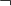
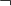
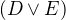
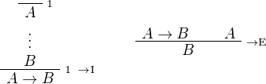
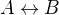

Logic and Proof
3 Natural Deduction for Propositional Logic
3.1 Derivations in Natural Deduction
We have seen that the language of propositional logic allows us to
build up expressions from propositional variables
using propositional connectives like  ,
,  , , and
. We will now consider a formal deductive system that we can use
to prove propositional formulas. There are a number of such systems
on offer; the one will use is called natural deduction, designed by
Gerhard Gentzen in the 1930's.
, , and
. We will now consider a formal deductive system that we can use
to prove propositional formulas. There are a number of such systems
on offer; the one will use is called natural deduction, designed by
Gerhard Gentzen in the 1930's.
In natural deduction, every proof is a proof from hypotheses. In
other words, in any proof, there is a finite set of hypotheses and a conclusion  , and what the proof shows is that
follows from
, and what the proof shows is that
follows from  .
.
Like formulas, proofs are built by putting together smaller proofs, according to the rules. For instance, the way to read the and-introduction rule,
is as follows: if you have a proof of from some hypotheses,
and you have a proof of  from some hypotheses, then you can
put them together using this rule to obtain a proof of
from some hypotheses, then you can
put them together using this rule to obtain a proof of  ,
which uses all the hypotheses in together with all the hypotheses in
. For example, this is a proof of from three hypotheses, , , and
,
which uses all the hypotheses in together with all the hypotheses in
. For example, this is a proof of from three hypotheses, , , and  :
:
One thing that makes natural deduction confusing is that when you put
together proofs in this way, hypotheses can be eliminated, or, as we
will say, canceled. For example, we can apply the
implies-introduction rule to the last proof, and obtain the following
proof of from only two
hypotheses, and :
Here, we have used the label 1 to indicate the place where the
hypothesis was canceled. Any label will do, though we will tend to
use numbers for that purpose.
We can continue to cancel the hypothesis :
The result is a proof using only the hypothesis . We can continue
to cancel that hypothesis as well:
The resulting proof uses no hypothesis at all. In other words, it establishes the conclusion outright.
Notice that in the second step, we canceled two "copies" of the
hypothesis . In natural deduction, we can choose which hypotheses
to cancel; we could have canceled either one, and left the other
hypothesis open. In fact, we can also carry out the
implication-introduction rule and cancel zero hypotheses. For
example, the following is a short proof of  from the
hypothesis :
from the
hypothesis :
In this proof, "zero" copies of have are canceled.
Also notice that although we are using letters like , , and
as propositional variables, in the proofs above we can replace them by
any propositional formula. For example, we can replace by the
formula  everywhere, and still have correct proofs. In
some presentations of logic, different letters are used for to stand
for propositional variables and arbitrary propositional formulas, but
we will continue to blur the distinction. You can think of , ,
and as standing for propositional variables or formulas, as you
prefer. If you think of them as propositional variables, just keep in
mind that in any rule or proof, you can replace every variable by a
different formula, and still have a valid rule or proof.
Finally, notice also that in these examples, we have assumed a special rule as the starting point for building proofs. It is called the assumption rule, and it looks like this:

What it means is that at any point we are free to simply assume a
formula, . The single formula constitutes a one-line proof, and
the way to read this proof is as follows: assuming , we have proved
.
The remaining rules of inference were given in the last chapter, and we summarize them here.
3.1.1 Implication

3.1.2 Conjunction
3.1.3 Negation
3.1.4 Disjunction
3.1.5 Truth and falsity
3.1.6 Bi-implication
3.1.7 Reductio ad absurdum (proof by contradiction)
3.2 Examples
Let us consider some more examples of natural deduction proofs. In each case, you should think about what the formulas say and which rule of inference is invoked at each step. Also pay close attention to which hypotheses are canceled at each stage. If you look at any node of the tree, what has been established at that point is that the claim follows from all the hypotheses above it that haven't been canceled yet.
The following is a proof of from and  :
:

Intuitively, the formula
"internalizes" the conclusion of the previous proof. The symbol
is used to combine hypotheses, and the symbol is used to express
that the right-hand side is a consequence of the left. Here is a proof
of that formula:
The next proof shows that if a conclusion, , follows from and
, then it follows from their conjunction.

Using the or-elimination rule can be tricky. If you are trying to
prove and you have  at your disposal, the strategy is to
split on cases: in one branch, show that follows from , and in
the other, show that follows from . In the execution of the
rule, therefore follows from three subproofs: the proof of
at your disposal, the strategy is to
split on cases: in one branch, show that follows from , and in
the other, show that follows from . In the execution of the
rule, therefore follows from three subproofs: the proof of  , then proof of from , and the proof of from . Here,
is a temporary assumption in the second component and is a
temporary assumption in the third. After the rule is applied, both
assumptions are canceled.
, then proof of from , and the proof of from . Here,
is a temporary assumption in the second component and is a
temporary assumption in the third. After the rule is applied, both
assumptions are canceled.
For instance, here is a proof of :

The conclusion of the next proof can be interpreted as saying that if
it is not the case that one of or is true, then they are both
false. It illustrates the use of the rules for negation.
Finally, the next two examples illustrate the use of the ex falso
rule. The first is a derivation of an arbitrary formula from  and :
and :
The second shows that follows from and :
In some proof systems, these rules are taken to be part of the system. But we do not need to that with our system: these two examples show that the rules can be derived from our other rules.
3.3 Forward and Backward Reasoning
Natural deduction is supposed to represent an idealized model of the patterns of reasoning and argumentation we use, for example, when working with logic puzzles as in the last chapter. There are obvious differences: we describe natural deduction proofs with symbols and two-dimensional diagrams, whereas our informal arguments are written with words and paragraphs. It is worthwhile to reflect on what is captured by the model. Natural deduction is supposed to clarify the form and structure of our logical arguments, describe the appropriate means of justifying a conclusion, and explain the sense in which the rules we use are valid.
Constructing natural deduction proofs can be confusing, but it is helpful to think about why it is confusing. We could, for example, decide that natural deduction is not a good model for logical reasoning. Or we might come to the conclusion that the features of natural deduction that make it confusing tell us something interesting about ordinary arguments.
In the "official" description, natural deduction proofs are
constructed by putting smaller proofs together to obtain bigger
ones. To prove , we start with the
hypothesis . Then we construct, separately, the following
two proofs:
Then we use these two proofs to construct the following one:
Finally, we apply the implies-introduction rule to this proof to cancel the hypothesis and obtain the desired conclusion:
The process is similar to what happens in an informal argument, where we start with some hypotheses, and work forward towards a conclusion.
Suppose Susan is tall and John is happy.
Then, in particular, John is happy.
Also, Susan is tall.
So John is happy and Susan is tall.
Therefore we have shown that if Susan is tall and John is happy, then John is happy and Susan is tall.
However, when we read natural deduction proofs, we often read them backwards. First, we look at the bottom to see what is being proved. Then we consider the rule that is used to prove it, and see what premises the rule demands. Then we look to see how those claims are proved, and so on. Similarly, when we construct a natural deduction proof, we typically work backwards as well: we start with the claim we are trying to prove, put that at the bottom, and look for rules to apply.
At times that process breaks down. Suppose we are left with a goal
that is a single propositional variable, . There are no
introduction rules that can be applied, so, unless is a
hypothesis, it has to come from an elimination rule. But that
underspecifies the problem: perhaps the comes from applying the
and elimination rule to , or from applying the or
elimination rule to and . At that point, we look to the
hypotheses, and start working forwards. If, for example, our
hypotheses are and , we would then work forward
to obtain and .
There is thus a general heuristic for proving theorems in natural deduction:
- Start by working backwards from the conclusion, using the
introduction rules. For example, if you are trying to prove a
statement of the form , add to your list of hypotheses
and try to derive . If you are trying to prove a statement of
the form , use the and-introduction rule to reduce your
task to proving , and then proving .
- When you have run out things to do in the first step, use
elimination rules to work forwards. If you have hypotheses
 and , apply modus ponens to derive . If you have a
hypothesis , use-or elimination to split on cases,
considering in one case and in the other.
and , apply modus ponens to derive . If you have a
hypothesis , use-or elimination to split on cases,
considering in one case and in the other.
In Chapter 5 we will add one more element to this list: if all else fails, try a proof by contradiction.
The tension between forward and backward reasoning is found in informal arguments as well, in mathematics and elsewhere. When we prove a theorem, we typically reason forward, using assumptions, hypotheses, definitions, and background knowledge. But we also keep the goal in mind, and that helps us make sense of the forward steps.
When we turn to interactive theorem proving, we will see that Lean has mechanisms to support both forward and backward reasoning. These form a bridge between informal styles of argumentation and the natural deduction model, and thereby provide a clearer picture of what is going on.
Another confusing feature of natural deduction proofs is that every
hypothesis has a scope, which is to say, there are only certain
points in the proof where an assumption is available for use. Of
course, this is also a feature of informal mathematical
arguments. Suppose a paragraph begins "Let  be any number less than
100," argues that has at most five prime factors, and concludes
"thus we have shown that every number less than 100 has at most five
factors." The reference "", and the assumption that it is less than
100, is only active within the scope of the paragraph. If the next
paragraph begins with the phrase "Now suppose is any number
greater than 100," then, of course, the assumption that is less
than 100 no longer applies.
be any number less than
100," argues that has at most five prime factors, and concludes
"thus we have shown that every number less than 100 has at most five
factors." The reference "", and the assumption that it is less than
100, is only active within the scope of the paragraph. If the next
paragraph begins with the phrase "Now suppose is any number
greater than 100," then, of course, the assumption that is less
than 100 no longer applies.
In natural deduction, a hypothesis is available from the point where it is assumed until the point where it is canceled. We will see that interactive theorem proving languages also have mechanisms to determine the scope of references and hypotheses, and that these, too, shed light on scoping issues in informal mathematics.
3.4 Some Logical Identities
Two propositional formulas, and , are said to be logically
equivalent if  is provable. Logical equivalences are
similar to identities like  that occur in algebra. In
particular, one can show that if two formulas are equivalent, then one
can substitute one for the other in any formula, and the results will
also be equivalent. (Some proof systems take this to be a basic rule,
and interactive theorem provers can accomodate it, but we will not
take it to be a fundamental rule of natural deduction.)
that occur in algebra. In
particular, one can show that if two formulas are equivalent, then one
can substitute one for the other in any formula, and the results will
also be equivalent. (Some proof systems take this to be a basic rule,
and interactive theorem provers can accomodate it, but we will not
take it to be a fundamental rule of natural deduction.)
For reference, the following list contains some commonly used propositional equivalences, along with some noteworthy formulas. Think about why, intuitively, these formulas should be true.
All of these can be derived in natural deduction using the fundamental rules listed in Section 3.1 But some of them require the use of the reductio ad absurdum rule, or proof by contradiction, which we have not yet discussed in detail. We will discuss the use of this rule, and other patterns of classical logic, in the Chapter 5.
3.5 Exercises
When constructing proofs in natural deduction, use only the list of rules given in Section 3.1.
- Give a natural deduction proof of
 .
. - Give a natural deduction proof of .
- Give a natural deduction proof of .
- Take another look at Exercise 3 in the last chapter. Using
propositional variables , , and for ``Alan likes
kangaroos,'' ``Betty likes frogs'' and ``Carl likes hamsters,''
respectively, express the three hypotheses in the previous problem
as symbolic formulas, and then derive a contradiction from them in
natural deduction.
- Give a natural deduction proof of
 .
. - Give a natural deduction proof of
- Give a natural deduction proof of from
 . (You do not need to use proof by contradiction.)
. (You do not need to use proof by contradiction.) - Give a natural deduction proof of .
- Give a natural deduction proof of from hypothesis .